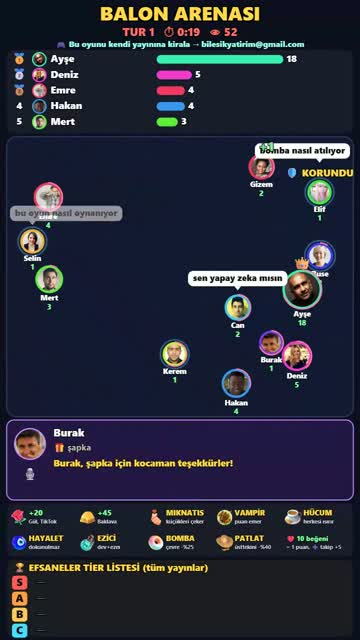

🎈 Balon Arenası — Kurulum
Sadece 2 dakika. Program yüklemek yok, sadece bir link ekliyorsun.
1
Bilgisayarda TikTok LIVE Studio'yu aç ve hesabınla giriş yap.
2
Yayın yönünü DİKEY yap (telefon ekranı gibi). LIVE Studio'nun üst kısmında Dikey / Yatay seçeneği var, Dikey'i seç.
3
Sol taraftaki kaynaklar bölümünde + Kaynak ekle butonuna bas.
4
Açılan listeden Link seç.(Bazı sürümlerde adı
"Web sayfası" ya da
"Bağlantı" olabilir.)
Oyun yakalama
Pencere yakalama
Görsel
🔗 Link
5
Adres kutusuna sana gönderdiğimiz linki yapıştır.
Boyut sorarsa: Genişlik 1080, Yükseklik 1920 yaz ve Tamam'a bas.
https://myste123.github.io/arena/?k=SANA-VERİLEN-KOD
6
Oyun ekranda belirecek. Köşelerinden tutup
tüm ekranı kaplayacak kadar büyüt. Şöyle görünecek:

7
CANLI yayına başla'ya bas. Bitti! 🎉
İzleyicilerin yayını beğenince ya da yorum yazınca fotoğraflı balon olarak arenaya girer. Hediyeler oyunda süper güç olur.
🔊 Ses: LIVE Studio'nun ses ayarlarında Link kaynağının sesi açık olsun.
Kendin konuşacaksan müziği kısmak için linkin sonuna &muzik=30 ekle (tamamen kapatmak: &muzik=0).
❓ Takıldığın yerde ekran görüntüsü atman yeterli, hemen yardımcı oluyoruz.
TikTok: Myste Medya · 📩 bilesikyatirim@gmail.com